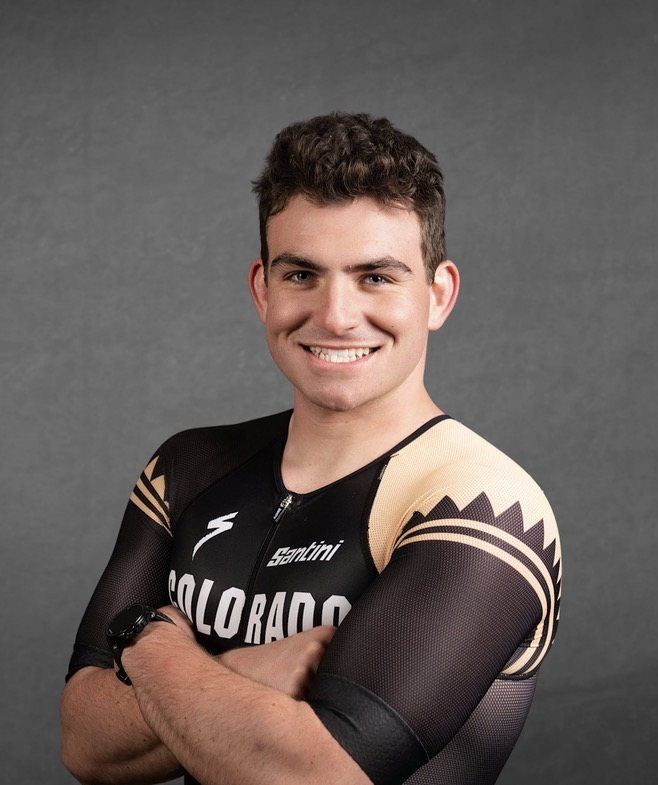

I am a junior at CU Boulder studying Creative Technology and Design with a minor in Business. I’m particularly interested in merging design, engineering, and the outdoors. I’ve worked across UX/UI design, photography, and digital design using tools like Photoshop, Illustrator, Premiere, Figma, and Onshape. In addition to my educational interests, I am on the Colorado Triathlon Team, Waterskiing Team, and a member of the Alpine Club.
When I’m not in Colorado climbing, skiing, or studying, I am in Minocqua, Wisconsin, on staff at Camp Kawaga, where I have the opportunity to positively impact future generations of young men. I help build key character traits that will serve them as the camper experience served me through our core values of spirit, enthusiasm, sportsmanship, and fellowship. I instill these values through my role as a counselor as I lead camping trips, teach outdoor skills, and manage positive and fun camping experiences.
Through my time there, I have developed management skills, critical thinking skills, and a positive, adventurous attitude. I’m driven by creativity, collaboration, and time spent in nature, always looking for ways to connect those values with real-world experiences.